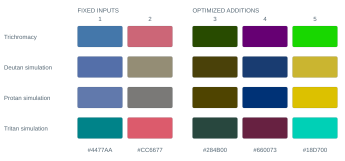
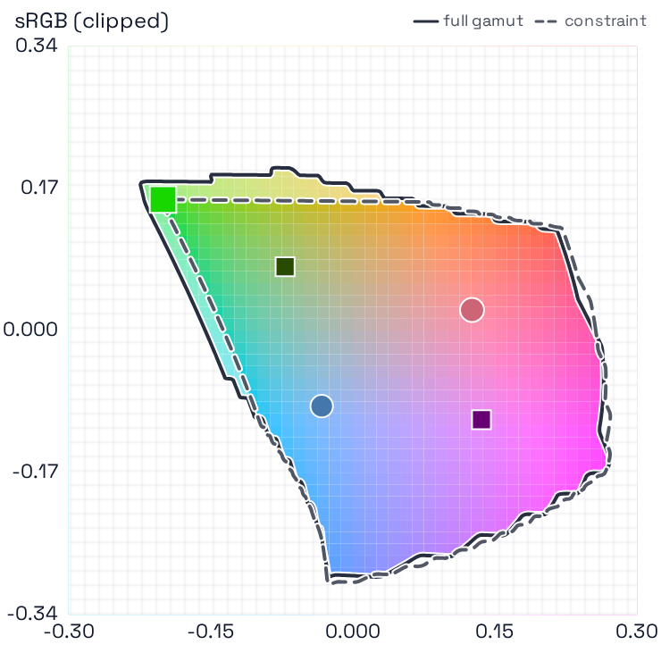
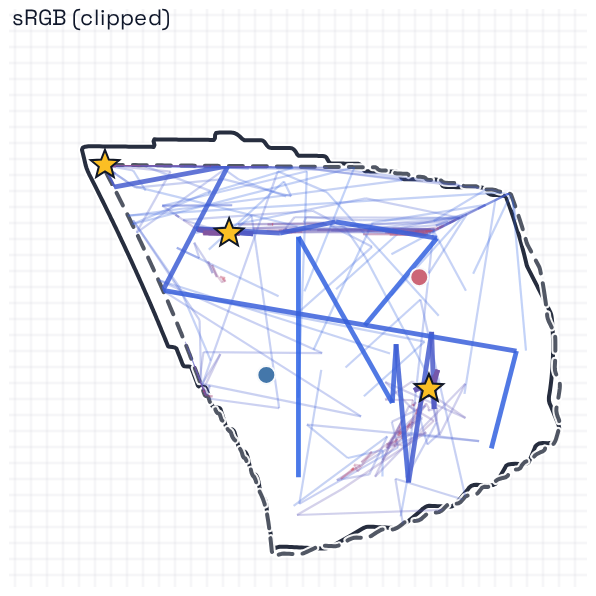
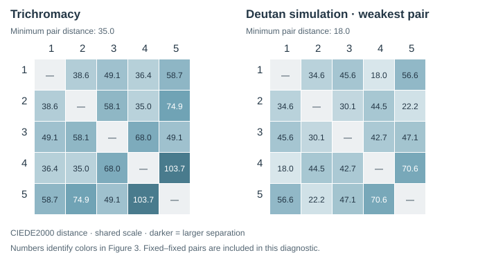

Palette Town Application research note · September 2026
Designing distinguishable
color palettes
A practical guide to perceptual color spaces, simulated color vision, and constrained palette optimization.
Abstract
Palette Town extends a categorical palette or adjusts selected colors to increase their modeled visual separation. It searches within user-defined color constraints, evaluates exported colors under trichromacy and three color-vision-deficiency simulations, and balances separation against penalties. The result is a reproducible design candidate, accompanied by diagnostics for inspecting weak pairs. Its scores quantify a computational objective; they do not establish readability, universal accessibility, or a globally optimal palette.
01 Introduction
In a categorical figure, colors identify groups rather than encode an ordered quantity. Adding a visually distinct color becomes harder as a palette grows, especially when existing colors must remain recognizable. RGB coordinates describe a display signal, but equal numerical RGB differences need not look equally different. Perceptual color spaces and color-difference formulas provide more useful, though imperfect, approximations.1, 2
The app treats palette design as a constrained search: preserve what matters, explore permitted alternatives, and assess the result under several models of vision. A simulation can expose distinctions that may collapse for some viewers; it is not a literal account of every individual’s visual experience.3
- Lightness
- How light or dark a color appears.
- Hue & chroma
- Color family, and distance from a neutral gray.
- Gamut
- The set of colors a specified display space can represent.
02 Methods
Define the design problem
Start with hex colors, a preset, or an image. Image input groups sampled colors using distance and weighted centroids in OKLab; rare features can still be lost during subsampling. Choose how many colors to add. A color marked Tweak becomes an adjustable replacement for its source, rather than an extra fixed color that must be distinguished from itself. An enabled background is an additional fixed comparison color.
The search space controls how colors are parameterized; the distance metric controls how they are compared. The default search space, OKLab, uses lightness L and two chromatic axes a and b; OKLCh expresses the same coordinates as lightness, chroma and hue.2 The default metric, CIEDE2000 (ΔE00), evaluates differences in CIELAB with corrections for perceptual nonuniformity.1 Alternative metrics include Euclidean Lab/OKLab distances, CAM02/16-UCS appearance-space distances, and ΔEITP.4–6 Their scales are not interchangeable.
Specify what may change
Contiguous constraints define one allowed interval per channel; discontiguous or drawn custom constraints permit several regions. Hard constraints delimit the feasible search region. Soft constraints permit departures at a cost. Individuated controls specify local windows, including a tweak’s own source window. Higher width-slider percentages tighten the allowed window; 0% leaves it open and 100% collapses it to a point.
Optimization gamut clipping projects candidates into the selected gamut while respecting applicable hard constraints; a failed projection is rejected. Visual clipping changes the plot separately. All scored and exported colors are 8-bit sRGB hex, even when the search uses Display P3 or Rec. 2020. Continuous coordinates remain available for constraint geometry, so clipping or quantization can shift the exported color away from an exact raw-coordinate bound.
Compare palettes under multiple vision models
By default, the app uses the Machado et al. model in a linear-sRGB basis, at its full-severity endpoint.3 Deutan, protan and tritan simulations concern the medium-, long- and short-wavelength cone pathways, respectively. The optimizer uses the same quantized simulations as the previews. The legacy option uses a simpler encoded-sRGB matrix approximation.
Here θ denotes the adjustable color parameters; d is the selected color difference after simulation; and E contains adjustable–fixed and adjustable–adjustable pairs. Fixed–fixed pairs cannot improve during extension and are excluded from this objective. A is the chosen aggregation, and P combines soft-constraint, gamut and parameter penalties. Vision weights w express design priorities, not measured population prevalences.
The default harmonic mean emphasizes small distances: for positive distances, A = n / ∑(1/d); any zero pair makes it zero. Choosing the minimum emphasizes the weakest pair within each vision state. The weighted sum across states still permits tradeoffs. Negative-order Lehmer means are not monotone: increasing one distance can lower the aggregate.
Search and retain the best candidate
Multiple seeded starts are refined by Nelder–Mead, a derivative-free method that moves a small set of trial points using reflection, expansion and contraction.7 Each restart ends at its iteration limit or when both objective spread and parameter spread are small. The app ranks completed runs by the penalized score. More restarts explore more starting regions; they do not prove global optimality. STOP retains the best completed restart.
03 Worked example & results
This fixed example retains two input colors and adds three. It uses OKLab search, CIEDE2000 distance, Machado simulations, equal vision weights, a harmonic mean, sRGB clipping, the 65% hard L constraint, and unrestricted a/b. Background comparison is disabled. Seed 2026, 12 restarts and 160 iterations per restart define the illustrated run. These figures do not change with your current controls.

A · Color-space view

B · Optimization paths


The weakest pair is substantially closer under the selected simulation than under trichromacy, despite joint optimization. This illustrates the compromise inherent in a weighted objective: inspect individual pairs, rather than interpreting the overall score as a guarantee for every viewer.
Select any figure to open it at full size. Reproduce or inspect the example: settings, output colors & full distance matrices. The illustration shows one search outcome, not an experimental estimate of improvement for human observers.
04 Discussion & limitations
A large aggregate score can coexist with a weak pair, especially in a low-weight vision state. Inspect all simulation panels and the complete palette, including existing input pairs. Check small marks, adjacent regions, the intended background, and the actual export. Background color distance is not a text-contrast ratio.
Color appearance depends on viewing conditions, spatial context, display calibration and individual vision. CAM calculations use fixed viewing assumptions; the app’s SDR ΔEITP option assumes 100 cd/m² reference white. Resolvability bands such as “great” and the relative penalty strengths are heuristics, not observer-calibrated acceptance thresholds. Restart variation reflects search stability, not confidence intervals for perception.
Hard projections and 8-bit quantization create nonsmooth regions and plateaus. Different seeds, metrics or constraints can therefore produce different candidates. For consequential designs, test plausible alternatives and validate the final visualization with its intended audience. Pair color with labels, shapes, line styles or patterns so information does not depend on color alone.8
05 Conclusion
Use the app as an explicit, inspectable design procedure: define fixed and adjustable colors, choose meaningful constraints, search under relevant vision models, inspect the weakest distinctions, and export. Its main value is making those choices reproducible and their tradeoffs visible.
References
- Sharma G, Wu W, Dalal EN. The CIEDE2000 color-difference formula: implementation notes, supplementary test data, and mathematical observations. Color Research & Application. 2005;30(1):21–30. doi:10.1002/col.20070. Author’s reference data.
- Ottosson B. A perceptual color space for image processing. 2020. Original OKLab technical description.
- Machado GM, Oliveira MM, Fernandes LAF. A physiologically-based model for simulation of color vision deficiency. IEEE Transactions on Visualization and Computer Graphics. 2009;15(6):1291–1298. doi:10.1109/TVCG.2009.113.
- Luo MR, Cui G, Li C. Uniform colour spaces based on CIECAM02 colour appearance model. Color Research & Application. 2006;31(4):320–330. doi:10.1002/col.20227.
- Li C, Li Z, Wang Z, et al. Comprehensive color solutions: CAM16, CAT16, and CAM16-UCS. Color Research & Application. 2017;42(6):703–718. doi:10.1002/col.22131.
- International Telecommunication Union. Objective metric for the assessment of the potential visibility of colour differences in television. Recommendation ITU-R BT.2124-0; 2019. Recommendation and specification.
- Nelder JA, Mead R. A simplex method for function minimization. The Computer Journal. 1965;7(4):308–313. doi:10.1093/comjnl/7.4.308.
- World Wide Web Consortium. Understanding Success Criterion 1.4.1: Use of Color. WCAG 2.2 supporting documentation. W3C guidance. Accessed September 5, 2026.